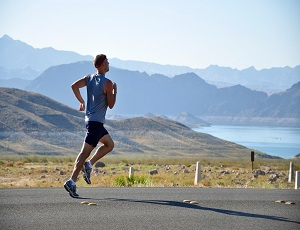
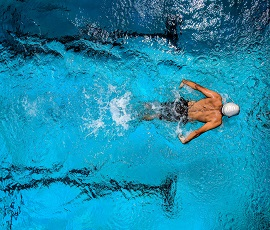

Hobbies

One of the things I have spent the most time doing lately is exercising. Especially during Covid-19, the stress levels were very high, and running, outdoors without a mask allowed me to get enough air in.
Meditation was another activity that I practiced regularly, and still do. I practice something called “Shambhavi Mahamudra Kriya”, which is a yogic practice offered by a teacher named Sadhguru. He also offers a lot of very good insights into numerous things on YouTube. I definitely recommend looking into him if you are someone who is interested in finding deeper knowledge or better ways to live.
Swimming is another activity that I love, and I have been swimming ever since I was 5 years old. My neighborhood has a pool that I can use to swim laps in the morning over the summer. During the year I sometimes use the YMCA to swim. I prefer swimming over running due to it being a full body workout, as well as it involving much less impact.
Video games is something that has stuck with me since childhood, as games have gotten much better and more interesting, as well as more addicting. I used to play massive multiplayer online games like “Runescape” and “World of Warcraft” as a kid because there weren’t many friends that lived near me, so it allowed me to make friends and play games online with them. I still play some of these today, but not as much.
Lastly, I am of course very interested in coding and learning how to write programs. Even though I have only just started, it is already fun to be able to write simple things in the Coral language. I have realized just how much is possible to do with programming. I like the creativity involved and the freedom it allows as you get better. I am planning on choosing Java for my degree and will be learning python over the summer.